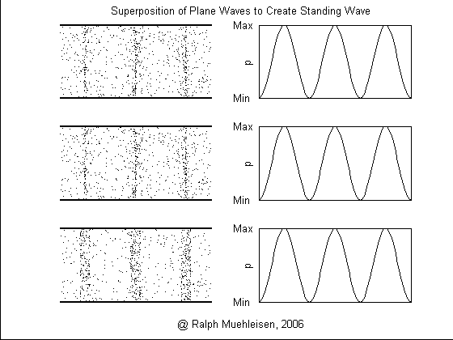

Simple Standing Wave

This animation shows a standing wave resulting from the superposition of two plane waves traveling opposite directions.
The left side of the figure shows a representation of the molecular distribution. The darker areas represent areas where the density is greater indicating a compression. Midway between the compressions are regions of lower density indicating rarefactions.
The right side of the figure shows a plot of the resulting acoustic pressure or acoustic velocity profile.
These animations were generated using MATLAB and saved as AVI files. The AVI files were converted to animated GIF files using the Ulead Gif Animator software.
These animations, auralizations, and visualizations are © 2006 by
Ralph T. Muehleisen and are licenced under
a Creative Commons Attribution-NonCommercial 2.5 License.